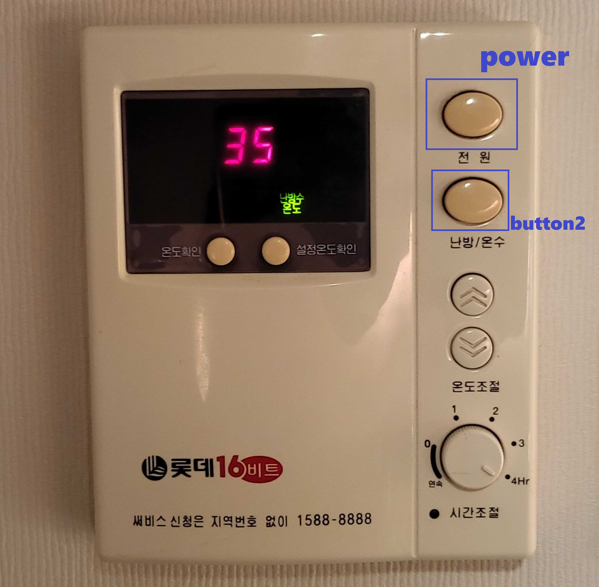
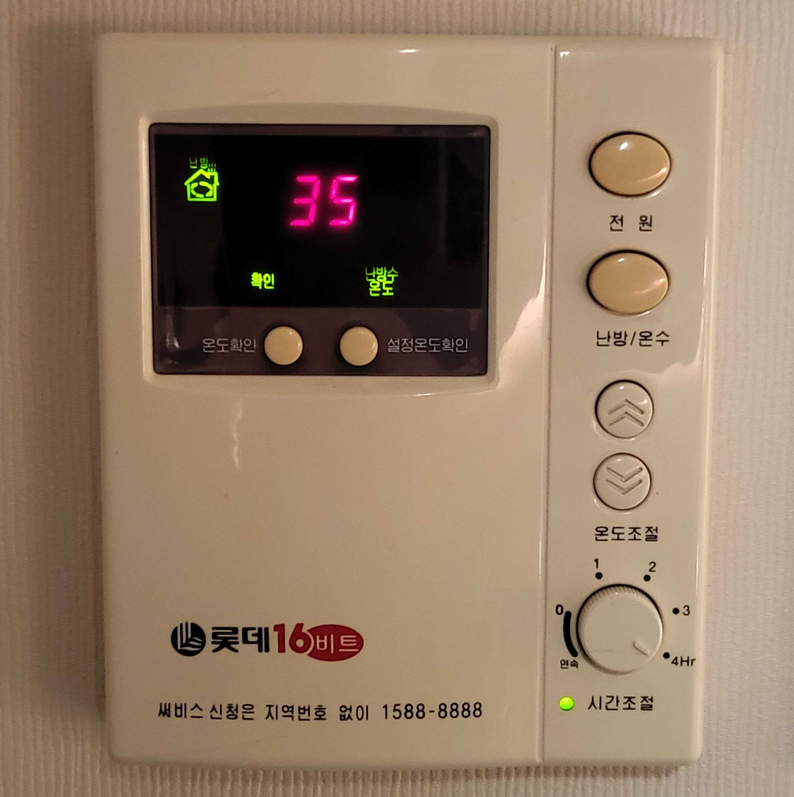

Musee gangnam FAQ
난방패널 사용법
-

난방/온수 버튼을 한번 누르시면 집모양 아이콘에 불이 들어옵니다
-
버튼을 한번 더 누르시면 샤워부스모양 아이콘에 불이들어오는데 이는 온수를 뜻합니다.
집모양 아이콘에 불이 들어오면 난방, 샤워기모양 아이콘에 불이 들어오면 온수가 됩니다.
세탁기 사용법
-

위 사진의 세제칸에 용도에 맞는 세제를 넣어줍니다.
(세제는 싱크대 하부에 있습니다.) -
전원버튼을 누르고 세탁설정을 원하시는대로 진행합니다
-
동작버튼을 눌러 세탁을 시작합니다.
건조이후에는 온도가 일정정도 내려갈때까지 세탁기문이 열리지 않습니다. 조금만 기다렸다가 문을 열어주시면됩니다
도어락 사용법
-

위 버튼으 누르고 키패드가 활성화되면 전달받은 비밀번호를 입력합니다.
문이 끝까지 제대로 잘 닫히지 않으면 경고음이 울리게됩니다. 외출 또는 퇴실시 문을 꼭 눌러 닫아주시길 부탁드립니다.
턴테이블 사용법
-
볼륨키를 돌리면 ON 에 불이 들어오고 LP가 돌아갑니다
-

BTOUT 레버를 ON으로 올립니다
-
위 핀부분을 판 위쪽에 위치시킵니다
-
핀을 조절하는 위 레버를 아래로 내립니다
퇴실시 혹은 취침시 꼭 턴테이블을 종료해주세요. 위 설명의 역순으로 진행헤주시면됩니다. LP가 핀에 긁히면 손상될 수 있으니 LP를 교체하실때 주의가 필요합니다.
친구가 공동현관문에서 호출을 했을때
-

경비 버튼을 누릅니다
-
문열림 버튼을 누릅니다